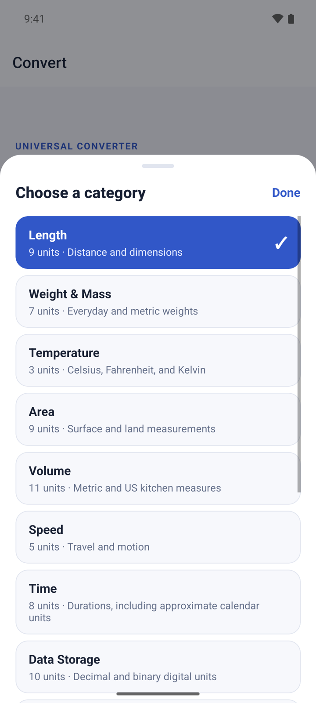

Что умеет приложение
Unit Converter переводит величину из одной единицы измерения в другую. Введите число, выберите две единицы, и результат появится прямо во время ввода. В приложении 15 категорий: от длины, веса и температуры до кулинарных объёмов, расхода топлива и объёма данных.
- Расчёты выполняются на вашем устройстве и работают без интернета.
- Аккаунт не нужен. Избранное и история хранятся только на телефоне.
- Переводит чашки и ложки в граммы для 20 популярных продуктов. Эти результаты приблизительные.
- Бесплатно, с небольшими баннерами только на экранах Browse и History. Разовая покупка Premium убирает рекламу.
Первый запуск
- Откройте Unit Converter. Приложение запускается на вкладке Convert в категории Length.
- Введите число в поле VALUE. Ответ сразу появится под RESULT.
- Ничего разрешать не нужно: приложение не использует камеру, геолокацию и файлы.

Перевод значения
- На вкладке Convert нажмите CATEGORY и выберите категорию, например Temperature.
- Нажмите FROM и выберите исходную единицу. Нажмите TO и выберите нужную.
- Введите число в поле VALUE. Для дробей используйте точку или запятую, без разделителей тысяч: вводите 1500, а не 1,500.
- Прочитайте ответ под RESULT.
- Нажмите ⇄, чтобы поменять единицы местами, или Clear, чтобы очистить значение.

Копирование результата
- Нажмите Copy result. Кнопка изменится на Copied.
- Вставьте текст в любое приложение. В скопированном тексте есть обе части, например «5 mi = 8.04672 km».
Каждый скопированный результат также сохраняется в History.
Обзор категорий
- Нажмите Browse, чтобы увидеть все 15 категорий и число единиц в каждой.
- Введите запрос в строку поиска, чтобы найти категорию или единицу по названию или обозначению, например «Speed» или «mph».
- Нажмите на категорию, чтобы открыть её в конвертере.

Сохранение любимых категорий
- На вкладке Convert выберите категорию и нажмите ☆ Save. Кнопка изменится на ★ Saved.
- Нажмите Favorites, чтобы увидеть сохранённые категории.
- Нажмите Convert now → на карточке, чтобы открыть эту категорию в конвертере.
- Чтобы убрать категорию из избранного, нажмите ★ на её карточке.

Повтор прошлого перевода
- Нажмите History. Там перечислены скопированные результаты, сначала новые. Хранятся последние 100.
- Нажмите Open in converter, чтобы снова загрузить ту же категорию, единицы и значение.
- Нажмите Copy, чтобы скопировать строку ещё раз.
- Чтобы очистить список, нажмите Clear all, а затем Clear.

Смена темы
- Нажмите Settings.
- В разделе Appearance выберите System, Light или Dark. Вариант System следует настройкам телефона.

Смена языка
- Нажмите Settings.
- Откройте настройку языка и выберите язык. Первый вариант, System default, следует языку телефона.
Названия категорий, единиц и продуктов меняются вместе с языком. Поиск в Browse находит названия и на вашем языке, и на английском.
Premium
Premium оплачивается один раз, это не подписка. Он убирает всю рекламу и больше ничего не добавляет: все категории и единицы бесплатны.
- Откройте Settings и нажмите Remove ads в разделе Premium. На кнопке указана цена.
- Если вы уже покупали Premium, нажмите Restore purchase.
Вопросы
Работает ли приложение офлайн? Да. Все расчёты выполняются на телефоне. Интернет нужен только для рекламы и покупки Premium.
Почему моего перевода нет в History? В History попадают только скопированные результаты. Чтобы сохранить перевод, нажмите Copy result на вкладке Convert.
Почему в результате написано "Enter a valid number"? В значении есть то, что приложение не может прочитать как число, например две десятичные точки. Вводите цифры не более чем с одной точкой или запятой.
Точны ли месяцы и годы? Нет. В категории Time месяц и год считаются по средней длине в календаре, и при их использовании под результатом появляется пометка.
Можно ли переводить валюты? Нет. Приложение переводит только единицы измерения.
Конфиденциальность
Расчёты выполняются на вашем устройстве, а избранное и история хранятся на телефоне. В бесплатной версии показываются баннеры Google AdMob. Полный текст: политика конфиденциальности.